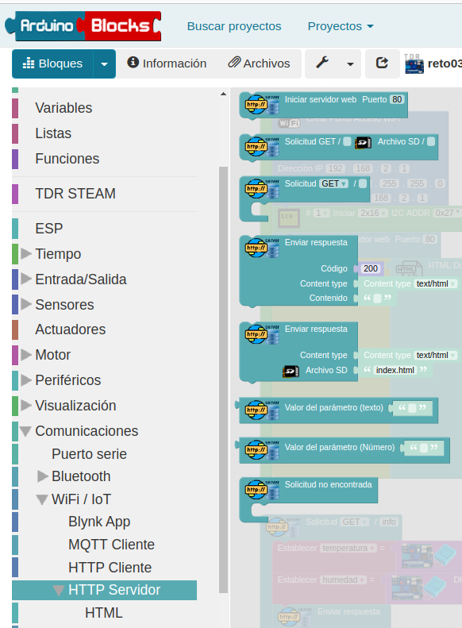
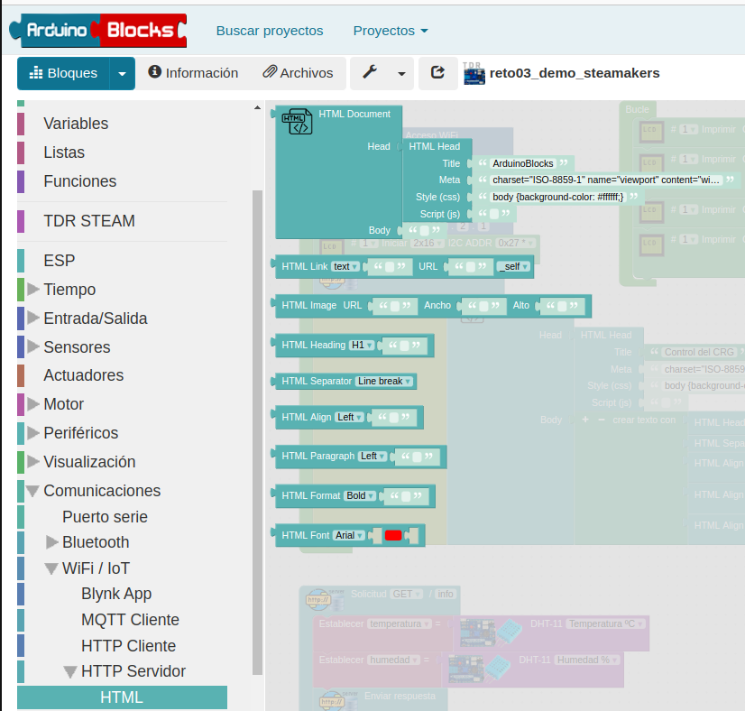

Capacidades web
La placa Steamakers tiene capacidades wifi y además puede actuar como servidor o cliente web, todas estas opciones están recogidas en Arduinoblocks. Para complementar estas características presenta opciones para formatear html.
